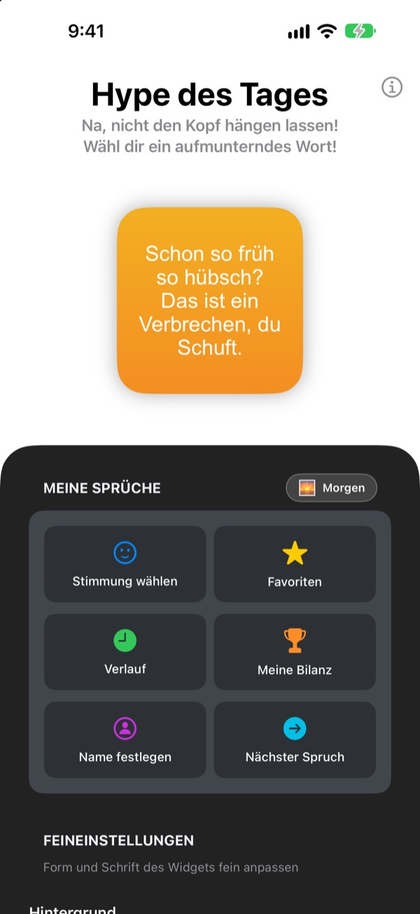
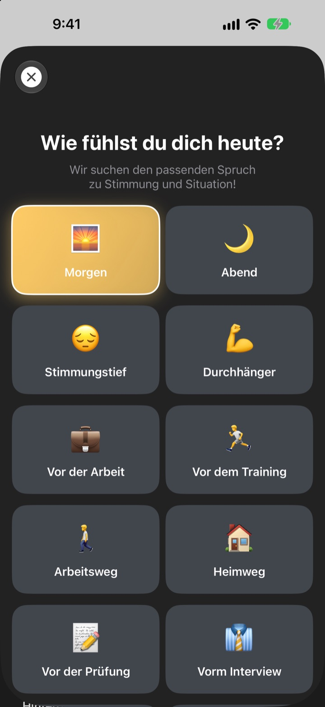
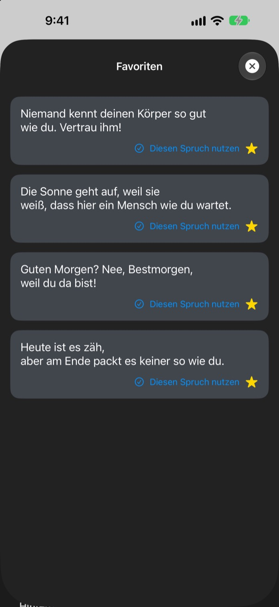
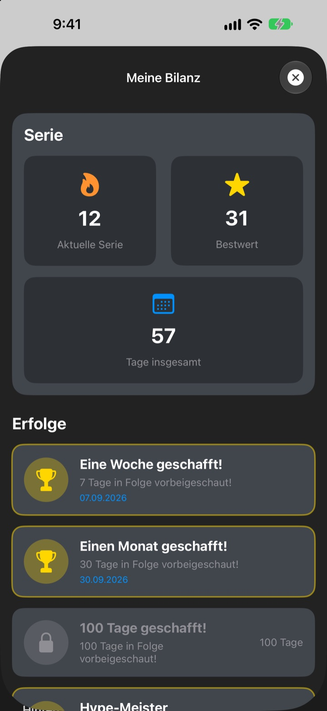

Jedes Mal, wenn du aufs Handy schaust,
wartet dein größter Fan
Hype des Tages ist ein Widget, das dich mit voller Absicht viel zu sehr lobt. Morgens ein Morgen-Spruch, vorm Interview ein Interview-Spruch. Schrift, Farben und Hintergrund stellst du ein, wie du magst.
Ein Kauf, alles drin. Kein Abo, keine Werbung.

Hol dir gleich einen Spruch
Wähl eine Stimmung, und das Widget zeigt den passenden Spruch. Mit Nächster Spruch kommt ein zufälliger aus allen 281.
Wer ist dein strengster Kritiker? Etwa du selbst?
Auf dem Arbeitsweg, vorm Interview, auf dem Heimweg: Die Stimme im Kopf meckert meistens. Hype des Tages steht mehrmals am Tag vom Home-Bildschirm aus auf deiner Seite, und zwar etwas mehr als nötig. Sobald du schmunzelst, kommt ein Stück Selbstvertrauen zurück.
Der Spruch zur Stimmung
Wähl aus 14 Stimmungen und Situationen wie Morgen, Arbeitsweg, Durchhänger, Vorm Interview oder Vor dem Date, und der passende Spruch landet sofort auf deinem Widget. Unentschlossen? Es gibt auch Zufall.

Lieblingssprüche aufheben
Tippe auf den Stern, um einen Spruch in den Favoriten zu sichern, und blättere im Verlauf durch frühere. Mit Diesen Spruch nutzen kommt er direkt aufs Widget.

Jeden Tag vorbeischauen lohnt sich
Jeder Tag, an dem du reinschaust, verlängert deine Serie. Bei 7, 30 oder 100 Tagen am Stück und bei insgesamt 50 und 100 Tagen schaltest du Erfolge frei.

In drei Schritten startklar
- 1
Stimmung wählen
Öffne
Stimmung wählenund tippe, was gerade passt. - 2
Widget gestalten
In den Feineinstellungen Schrift, Schriftfarbe, Hintergrund und Aktualisierung wählen.
- 3
Auf den Home-Bildschirm legen
Home-Bildschirm gedrückt halten, auf + tippen und Hype des Tages suchen.
So machst du das Widget zu deinem
- Schrift
- 13 Schriften, darunter Futura, Georgia und Marker Felt
- Schriftfarbe
- Jede Farbe, die dir gefällt
- Hintergrund
- Ein Farbverlauf aus zwei Farben oder eines der mitgelieferten Fotos
- Ausrichtung
- Links, mittig oder rechts
- Zeilenabstand
- Enger oder luftiger
- Aktualisierung
- Ein neuer Spruch alle 5, 15 oder 30 Minuten
Die Größe des Widgets wählst du beim Hinzufügen zum Home-Bildschirm.
Einmal kaufen, fertig
Die App
- 281 Sprüche für 14 Stimmungen
- Ein Home-Bildschirm-Widget nach deinem Geschmack
- Favoriten und Verlauf
- Serien und Erfolge
Den Entwickler unterstützen
- Wähl ein kleines, mittleres oder großes Trinkgeld
- Damit wird nichts freigeschaltet. Es ist einfach ein Dankeschön
Nur wenn und wann du magst.
Kein Abo, keine Zusatzkäufe, keine Werbung.
Häufige Fragen
Wie füge ich das Widget hinzu?
Halte eine freie Stelle auf dem Home-Bildschirm gedrückt, bis die Symbole wackeln, tippe oben auf +, such nach Hype des Tages und wähl eine Größe.
Wie wird der nächste Spruch ausgesucht?
Wählst du eine Stimmung, landet ein Spruch dazu sofort auf dem Widget. Danach zeigt das Widget im gewählten Takt einen zufälligen aus allen 281. In der App kannst du auch mit Nächster Spruch selbst weiterblättern.
Kann ich Schrift oder Aktualisierung ändern?
Ja. In den Feineinstellungen änderst du Schrift, Schriftfarbe, Hintergrund, Ausrichtung, Zeilenabstand und Aktualisierung. Zur Wahl stehen 5, 15 oder 30 Minuten.
Das Widget hat sich nicht sofort geändert.
Wann Widgets neu gezeichnet werden, entscheidet iOS, deshalb hinkt es dem gewählten Takt manchmal etwas hinterher. Öffne die App und schließ sie wieder, dann aktualisiert sich das Widget.
Wie funktioniert die Serie?
Jeder Tag am Stück, an dem du einen Spruch ansiehst, verlängert die Serie. Unter Meine Bilanz siehst du aktuelle Serie, Bestwert, Tage insgesamt und deine Erfolge.
Meine Favoriten und der Verlauf sind weg.
Alles wird nur auf deinem Gerät gespeichert und wandert nicht mit, wenn du die App löschst oder das Handy wechselst. Hast du nichts gelöscht und es ist trotzdem weg, schreib uns bitte eine E-Mail.
Werden meine Daten irgendwohin geschickt?
Nein. Die App sammelt keine persönlichen Daten. Favoriten und Verlauf bleiben auf deinem Gerät.
Wie melde ich einen Fehler oder schlage etwas vor?
Direkt über Entwickler kontaktieren in der App, per E-Mail oder per Instagram-DM an @lee25_ios. Wir melden uns, sobald wir es gesehen haben.
Fragen oder Feedback? Schreib an leeo@kakao.com.